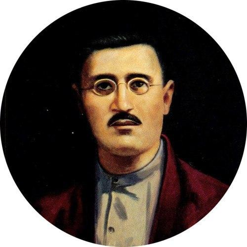

JADID-LIBRARY
Milliy istiqlol g'oyalari va jadidlar merosi raqamli talqinda



Loyiha maqsadi
Ushbu "Jadid-Library" raqamli portali XX asr boshidagi Turkiston jadidlarining boy ijtimoiy-siyosiy, huquqiy va ma'rifiy merosini o'rganish hamda ommalashtirish maqsadida yaratildi. Loyiha doirasida milliy istiqlol va davlatchilik g'oyalarini o'zida mujassam etgan nodir asarlar raqamlashtirildi. Asosiy maqsadimiz — Yangi O'zbekistonda Uchinchi Renessans poydevorini qurishda jadid bobolarimizning ma'rifatparvarlik g'oyalaridan dasturilamal sifatida foydalanish va ularni yosh avlodga yetkazishdir.
Jadidlar hikmatlari
"Dunyoda turmoq uchun dunyoviy fan va ilm lozimdur, zamona ilmidan bebahra millat boshqalarga poymol bo'lur."
"Haq berilmas, olinur!"
"Bu dunyo kurash maydonidir. Sog'lom tan, o'tkir aql va yaxshi axloq bu maydonning qurolidir."
"G'aflatda qolgan millatning taqdiri halokatdir."
"Moziyga qaytib ish ko'rmoq xayrlidir."
"Adabiyot har bir millatning hisli ko'ngil oynasidir."
"Kishan kiyma, bo'yin egma, ki sen ham hur tug'ilg'onsen!"
"Ko'ngil, sen bunchalar nega kishanlar ichra qolding?"
"Haqiqiy ozodlikka faqat ilm va ma'rifat orqali erishiladi."
"Har bir millatning taraqqiysi yoshlarning tarbiyasiga bog'liqdir."
"Ilm o'rganmoq farzdir, ammo uni millat manfaati uchun ishlatmoq qarzdir."
"Millatni uyg'otmoq uchun avval uning tilini va tarixini asramoq lozim."